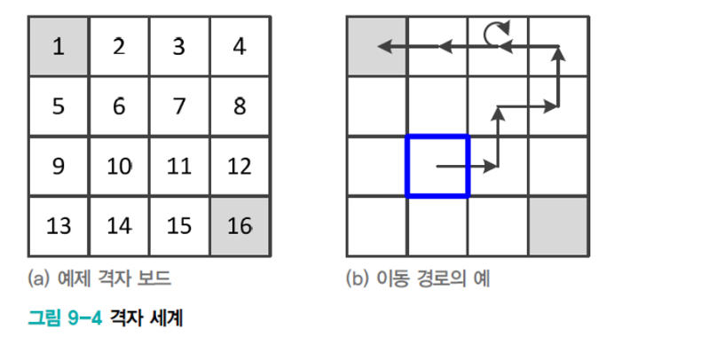
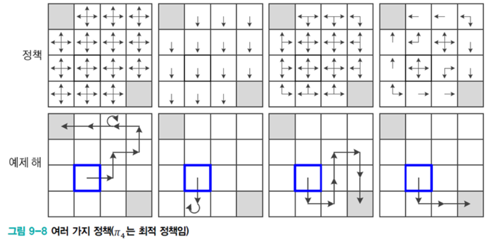
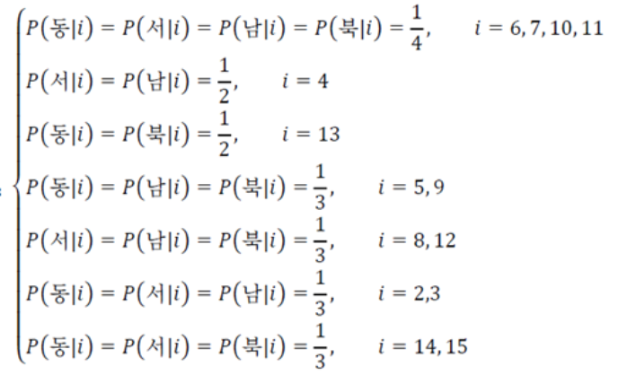
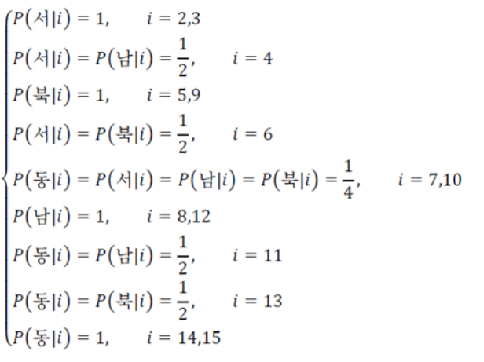

Markov Decision Process
자기전에 스타를 했더니 상대방에게 핵을 맞았다고 하자…

나는 왜 핵을 맞았을까? 게임안에서 주어지는 여러가지 state에서 action을 취했을 때 가능한 여러가지 결과 중 하나가 나에게 돌아온 것이다.
조건부 확률과 용어를 빌리면 action들과 state들에 대한 조건이 주어져 있을때 state에 대한 조건부확률분포(conditional distribution)에서 하나의 event가 sample로 뽑힌 것이다.(여기서는 핵을 맞는 사건이 뽑힌것이다.)
\[p_{S_t|S_0,A_0\dots,S_{t-1}A_{t-1}}(s_t|s_0,a_0,\dots,s_{t-1},a_{t-1})\]
이와 비슷하게 내가 핵을 맞기전에 취할 수 있는 판단도 여러가지며 또한 취하는 판단의 근거도 마찬가지로 이전의 상황과 내가 취한 판단에 의해 결정되었을 것이다. action과 state들이 주어졌을때 취할 수 있는 action에 대한 조건부 확률분포는 다음과 같다.
\[p_{A_t|S_0,A_0,\dots,S_{t-1},A_{t-1}}(a_t|s_0,a_0,\dots,s_t)\]
위의 내용은 일반적으로 우리가 생각하는 직관과 일치하는 경우이다. 하지만 (지금까지 연구된)강화학습의 경우 이와는 다르게 Markov Decision Process를 가정한다. 그렇다면 Markov decision process란 뭔가? 위키피디아의 정의에 의하면 “각 사건에 대한 확률이 사건으로부터 얻은 상태에만 의존하는 일련의 가능한 이벤트를 설명하는 확률적 모델”이라고 적혀있다. 강화학습이 MDP를 따르므로 다시 말하자면 현재 내가 놓인 상황(의 확률분포)이나 현재 내가 하는 액션(의 확률분포)은 바로 이전의 상태나 행동의 영향만을 받는다는 것이다. MDP가 따르는 이러한 특성을 Markov property라고 한다.
\[\begin{aligned} &\text{Markov property}\\ &\forall{t,}\,\,p_{\small{S_t|S_0,A_0\dots,S_{t-1}A_{t-1}}}(s_t|s_0,a_0,\dots,s_{t-1},a_{t-1}) = p_{\small{S_t|S_{t-1}},A_{t-1}}(s_t|s_{t-1},a_{t-1})\\ &\forall{t,}\,\,p_{\small{A_t|S_0,A_0,\dots,S_{t-1},A_{t-1}}}(a_t|s_0,a_0,\dots,s_t)=p_{\small{A_t|S_{t}}}(a_t|s_t) \end{aligned}\]첫번째 확률은 상태\(s_{t-1}\)에서 (\(a_{t-1}\)을 취하여) \(s_{t}\)로 transition(변할때)에 대한 확률분포이므로 transition probability라고 부른다. 두번째 확률은 policy(정책,지표)로 어떤 상황에서 어떤 액션을 취할지에 대한 기준이 되는 확률분포이다.(후에 optimal policy에 대해 자세히 다룬다.)
transition probability
\[\begin{aligned} &\text{definition of transition probability}\\ &p_{\small{S_t|S_{t-1}},A_{t-1}}(s_t|s_{t-1},a_{t-1})\\ \end{aligned}\]
위와 같은 그림을 살펴보자.왼쪽로봇의 경우 Deterministic Grid World(=Envirion ment)에 놓여있고 앞으로 가는 action을 취할 경우 반드시 앞으로 가므로 state가 결정적(deterministic)이라고 할 수 있다.반면에 오른쪽로봇의 경우 Stochastic Grid World에 놓여있다.이러한 경우에는 action을 취해도 3가지 상황에 취해질 수 있으며 이 경우 state는 Stochastic하다고(바람의 영향이나,로봇이 오작동하거나)할 수 있다.다시말하면 state는 확률분포에 따라 임의적(randomly)이다.
Policy
정책\(\pi(a_t|s_t)\)는 어떤 상태가 주어질때 어떤 행동을 취할 것인지 명시한 (조건부)확률분포를 말한다.
\[\begin{aligned} &\text{definition of poilcy} \\ &{\pi}({a_t,s_t}) \overset{\Delta}{=}p_{A_t|S_{t}}(a_t|s_t) \end{aligned}\]아래와 같은 그림을 보자 초기 state는 파랑색 위치이며 agent는 왼쪽위나 오른쪽아래의 종료지점까지 가야한다.


왼쪽위의 그림에서 모든 policy는 다음과 같다.
\[\begin{aligned} \forall{t},\pi(a_t,s_t) = p_{\small{A_t|S_t}}(a_t|s_t) = \begin{cases} p_{\small{A_t|S_t}}(\text{right}|s_t) = \frac{1}{4}\\ p_{\small{A_t|S_t}}(\text{left}|s_t) = \frac{1}{4}\\ p_{\small{A_t|S_t}}(\text{up}|s_t) = \frac{1}{4}\\ p_{\small{A_t|S_t}}(\text{down}|s_t) = \frac{1}{4}\\ \end{cases} \end{aligned}\]각각의 state에서 action은 위와 같은 policy를 따르므로 아래와 같은 경로가 예제해로 나올 수 있다.
왼쪽에서 두번째 있는 그림의 모든 policy는 다음과 같다.
\[\begin{aligned} p_{\small{A_t|S_t}}(a_t|s_t)= \begin{cases} \frac{1}{4} \text{ if } a_t = \text{down} \\ 0\text{ otherwise} \end{cases} \end{aligned}\]위와 같은 policy를 따르므로 모든 state에 대해서 남쪽방향으로만 나온다.
오른쪽에서 두번째 그림의 policy는 다음과 같다.

가장 오른쪽 그림의 policy는 다음과 같다.

생각해보면 가장오른쪽 위 사각형같은 policy가 정해지면 가장 빠르게 목표에 도달할 수 있다. 이는 최고의 reward를 받도록 학습된 결과이다.
정리
- 강화학습은 MDP를 가정한다. 이는 이전 state나 액션에 의해서만 확률분포가 영향을 받는다는 것이다.
- policy는 임의의 state에 취한 action의 확률분포함수로 어떤 action을 할지는 이것에 의해 결정된다.
참고자료
위키피디아 - markov chain(=markov process)
혁펜하임-[강화학습] 2-1강. Markov Decision Process (MDP) 쉬운 설명
Fundamental of Reinforcement Learning
wordbe